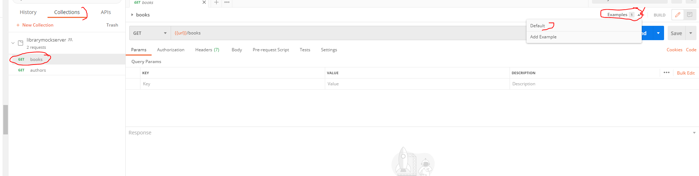

Postman- Setting Up Mock Server and creating API's 14th Jan 2021
In this blog we will learn about Postman mock server. Postman have this unique feature of mock servers that allow developers to simulate an endpoint without the need of actually spinning up a back-end server.Postman has now included a new feature to help you even further.This new feature allows you to set mock responses.This feature is called Examples. We will see how to use them below.
Creating API's and Mock Server
- In most of the images I used below, I have marked items in red so that you can notice what am referring to more easily
-
Step 1) Open Postman App and create a workspace.I
created
"mockserverdemo"
Workspace is created
- Step 2) Now that worksace is created lets create a Mock Server .Click on "New" on top left and then click New Mock Server as shown on image below(marked in red).
-
Step 3) Imagine we are creating an Library Application
and say, we need two api's namely books and
authors. So lets create a 2 Endpoints for this
collection. Also, adding sample JSON response we are expecting
(assume api schema is already decided). Now, we have books and
authors , two endpoints configured with predefined responses.
Other thing to note is the response code configured for both the
requests(200 for both)
You can download both sample responses from my github link Github link to sample responses Files are named "samplebooks" and "sampleauthors".
- Step 4) Name the mock server. I named it librarymockserver
- Step 5) You will see collection is created with the same name as well. In this case "librarymockserver".Now that mockserver is setup,copy the base url. You will need it for all subsequent requests you want to make
- Info) Before we move any further let's pause and understand What are Examples and Why do we need them .Like mentioned above, Example is a new feature introduced by Postman. It helps you bind a particular request with a response. i.e it creates tightly coupled request and response pair.
- Now to answer why we need Examples. In a real world scenario a particular API will throw mutliple responses eg 200 for OK,404 not found,500 etc etc. It's pretty useful if you create and save few example responses along side a request.This makes API more understandable,so your colleagues can get a quick overview of it by just looking at examples and they will definitely appreciate it :-). To take a step further, imagine you are going to build an api with an endpoint which doesnot yet exist, or your server just isn't ready. With Egamples you can mock raw responses and save them. Then you will be able to generate a mock endpoint for each of them using Postman’s mock service.With this setup, developers can makes requests to the mock endpoint, and get started with their front-end development work based on the mock response returned from the mock endpoint.This way front end devs can work paralelly along with backend devs,who in turn, may be actually writing the backend code. The whole process becomes streamlined, and this setup leads to get work done parallely and fast.
- If you look at Step 3 above, while creating the mock server, first step was to create a collection and then give the request path , response code and a response. If you entered those values you already have created an Example(named default)
- Step 6) Click on books on the left, and then click Examples on the right and select first eg i.e default. 
-
Step 7) Clicking on default should open below.
There are few points to consider in below image. As usual, I
have marked
them in red so that you
can notice it
- There is variable used for base url i.e named url. Variable is created for us automatically and setup in environment scope when we were creating mock server.Refer step 4. Remember, you need to have an environment setup otherwise this variable can't be used. If you need to understand various scope do watch my youtube video below to get better understanding.But please hold on watching until you finish this blog :-)
- Name of eg is "Default". I will Rename Default" TO "books_200" as it makes more sense to me.
- In the example response select body and ensure that you have JSON selected as this API will return a JSON back to caller
- On the right, in example response, we have status as 200
- Info) Also, assume that you also want to configure books with a 500 response .This is required if you want your API throw an exception. This would mimic an unexpected exception and the front end developers can write code to handle it properly and gracefully.
-
Step 8) Let's create an Example for 500 error.I will call
this Example books_500. Again, click on "books" as you
did on step 6 and then click on Add Example on the
right.Clicking that will open up a window.Enter the details
.Image for reference below. All important points
marked in red. Save egample.

- Step 9) Now you have 2 Examples configured.books_200 and books_500.I had no envorinment setup so I will have to copy the base url to replace the variable {{url}} Incase you don't have the mock url copied anywhere, you can get it by clicking your mockserver. Image for reference below
-
Step 10) Now let's actually create a mock request so that
we match one of the saved examples. Let's create the mock
request so that we get response set in books_200 Example.
Important part is setting x-mock-response-code as
200 in the request header as shown below.Click on "send"
and you will get response as expected which was set in books_200
example.
Same way if you set x-mock-response-code as 500 in the request header then you will get error we configured(book_500). Isn't this feature handy :-) - Info) In above example mock request, we used x-mock-response-code to retrieve the saved example response.Similarly, other optional headers like x-mock-response-name or x-mock-response-id can be used
How to use x-mock-response-name or x-mock-response-id
To get the x-mock-response-id or in that matter even x-mock-response-name you need to make certain Postman API calls. The Postman API endpoints help you integrate Postman within your development toolchain.You need a valid api-key to send requests to those Postman API's. Please follow my blog to see step by step process to register and get an API key.Also, in that blog you will see how to grab x-mock-response-name and x-mock-response-id which are used in request below Postman Get API key and retrieve collection details
- x-mock-response-name - . Send the request again with name in the header .Call it x-mock-response-name and send the request as shown below
-
x-mock-response-id You can send the request with
x-mock-response-id in the header as well.

How the incoming mock request matches one of the saved Egample
Postman uses it's own algorithm. I have put the link to their official website in "Official Documenation" section below. But i will explain the algorithm in simpler way but not in as detail as Postman ofcourse.
- Properly formatted responses- Responses that are not in matching format are removed from the matching process
- HTTP method- Pretty obvious. Any responses that are not the same as HTTP method type are removed from the matching process.For eg, if your mock request sent to , like say you do a POST to http/{baseurl}/books then all saved egamples whose method type is not POST will be removed. Therefore, as per my saved Examples,nothing will be matched because I had no POST for books at all.I only had books_200 and books_500 configured both of which were only GETs
- Filter by URL I will not dwelve into it but will touchbase on it with an eg. I have created a separate blog for the same. Afterall we just need to get our work done and not masterize the algorithm in most cases. Link to the blog in "Learn More" section below
- Wildcards If you donot have the variable configured in the mock server's associated environment,then those variables are treated as Wildcards. Again, I will explain that in a separate blog.Link to the blog in "Learn More" section below
Learn more
If you want to learn how to configure multiple responses for same response status code, how to use Wildcards etc refer my blog Postman-Advanced
Official Documentation
For full documentation you can refer official Postman website Official Postman website -mocking with API
And that's it. Hope you undertood how to customize JSON server. .Email me at "techspacedeck@gmail.com" incase you have queries. Alternatively, you can fill the "CONTACT" form or drop a comment below